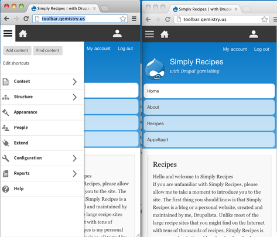

© 2013 CrossFunctional | PH: +61 (02) 800 800 99 | ABN: 971 5541 8125
The release of Drupal 8 is less than one year away; expected to drop around September, 2013. For some that may still seem like a long time away, but given the number of changes and new features that are planned to be packed into Drupal 8, 11 months does not seem that far off.
For those who have not been following the changes that are planned for Drupal 8 [1], check out the Drupal 8 initiatives [2] to get a taste of some of the work that's going into Drupal 8.
These changes have motivated me to start contributing to Drupal 8, especially as feature freeze is one month away and code freeze is five months. Some one of the ways I want to do this is by covering some of the developments that are happening in Drupal 8, particularity in the area of front end development. I will aim to write a post once a month.
One of the Drupal 8 initiatives [2] that I am in particularity interested in is the Mobile Initiative [3], lead by John Albin. [4] To sum it up in one sentence, the purpose of the mobile initiative is to 'make Drupal a mobile friendly CMS', and I recommend that anyone who hasn't already should read John Albin's blog post [4] to get an understanding on how this is going to be achieved.
This week, I will be looking at three developments in the area of mobile development:
Having a responsive toolbar has been a project driven by the Spark Initiative [5] to improve the content authoring experience in Drupal 8 (part of core) and Drupal 7.
Currently in Drupal, the toolbar is not responsive, thus making it a little bit harder to navigate on mobile devices.
A prototype [6] of the toolbar is available.
Below is a screenshot of how the prototype currently looks:

There are still additional features that are currently being worked on. Please note: the screenshots below are designs only, and have not yet been implemented.
More information on the responsive toolbar can be found in a video demo [7] and in the original blog post [8] by Kevin O'Leary [9].
Images courtesy of Kevin O'Leary [9]
I think the admin bar being responsive is a big milestone in Drupal becoming a mobile friendly CMS. In fact, the first person who had brought to my attention the benefits of a responsive admin toolbar was a client over 12 months ago. They wanted the ability to easily manage content via their mobile device.
And, as mentioned in Kevin O'Leary's original blog post [8], the design of the responsive toolbar was developed from information obtained by user stories [10]. This was a smart approach, given that not only developers use the admin toolbar.
The first mobile usability test has been carried out on the responsive toolbar, and even though the reactions were promising, there is still some work that needs to done.
Below is my short summary of the findings [11]:
Major Positives:
Major Issues:
Full details of the usability results can be found here [11].
Browsing the admin interface in D7 is not pretty, which is why responsive tables have come to the rescue.
The way it works it that is allows you to set priorities that describe which columns should collapse and when, via the new theme_table() [13] API. Here's a summary of how it works:
More information and example of the code can be found here [13].
All of this work would have not be possible without time and effort of Drupal community volunteer. Feature freeze is only one month away and code freeze is only five months away, so now is a good time to get involved.
This is my first post in the series, so if you have found anything useful, or have any suggestions on other topics that you would like me to cover in the area of Drupal8 frontend development , feel free to leave a comment.
© 2013 CrossFunctional | PH: +61 (02) 800 800 99 | ABN: 971 5541 8125
Links:
[1] http://drupal.org/node/572834
[2] http://groups.drupal.org/drupal-initiatives
[3] http://groups.drupal.org/mobile/drupal-8
[4] http://palantir.net/blog/drupal-8-mobile-initiative
[5] http://drupal.org/project/spark
[6] http://toolbar.qemistry.us/
[7] http://youtu.be/bVa5TqmnktI
[8] http://typographia.drupalgardens.com/content/responsive-toolbar-drupal-8
[9] http://typographia.drupalgardens.com/content/about-kevin-oleary
[10] http://en.wikipedia.org/wiki/User_story
[11] http://groups.drupal.org/node/260203
[12] https://skitch.com/dcmistry/es917/people-simply-recipes
[13] http://drupal.org/node/1796238
[14] http://crossfunctional.net/tags/d8
[15] http://crossfunctional.net/tags/mobile
[16] http://crossfunctional.net/tags/responsive-design
[17] http://crossfunctional.net/tags/spark
[18] http://crossfunctional.net/tags/responsive-toolbar